DOCUMENTS DIVERS NON PUBLIÉS (2/3)
DOCUMENTS DIVERS NON PUBLIÉS (2/3)
DOCUMENTS DIVERS NON PUBLIÉS (2/3)
DOCUMENTS DIVERS NON PUBLIÉS (2/3)
NOUVEAU D'HOZIER
Référence : Nouveau d'Hozier n°214
Provenance : Marie-Hélène Boucher -
Jacqueline Abadie
1ère génération :
C.M. Jacques de LOUCELLES, écr., Sgr de Mauni et patron en la portion de la paroisse de Rouxeville, fils et héritier en sa partie de Nicolas de LOUCELLES, et de Dlle Diane LE CHEVALIER, sa femme, accordé le 19.08.1682 avec Dlle Catherine THIBOUT, fille de Pierre THIBOUT, écr., Sgr de la Rillerie, de Tilly et de la Luzerne, et de Dlle Jeanne RADULF, sa femme. Contrat reçu par Pierre Le Haguais, notaire à Thorigni, en présence de Michel André de LOUCELLES, écr., Sr de St-Martin, frère, de Julien MOISSON, écr., Sr de St-Julien, de Louis de LOUCELLES, curé de Rouxeville, de N.... LE CHEVALIER, écr. Sr de Brieux, et de la part de la future épouse, de N.H. Michel RADULF, Dr de Sorbonne, Grand Archidiacre et chanoine de l'église cathédrale de Bayeux, de Nicolas RADULF, écr. Sgr delesnaud, Conseiller du Roi et lieutenant criminel à Vire, de N.... RADULF, écr., Sr de Beaumont, d'Aimond RADULF; écr. Sgr et patron de Mere.
- divers aveux.
- Inventaire des titres produits le 12.01.1683 par Nicolas de LOUCELLES pour être rayé de l'enrollement aux tailles. Preuves : fils aîné de Guillaume, écr. fils de Jacques, fils de Michel, fils de Vaast, fils de Robert, qui était fils de Guillaume de LOUCELLES, écr., Sr de Mauni et de Rouxeville de l'an 1464.
2ème génération :
- C.M. de Nicolas de LOUCELLES, écr., fils de Nicolas de LOUCELLES et de Dlle Marie CAPON,....... assisté de Me Georges de LOUCELLES, son oncle et son tuteur principal, écr., prêtre, Sr de Valdurand, de Daniel MOISSON, son oncle et son tuteur actionnaire, écr. et patron de la paroisse de Précorbin, de Me Guillaume DE LOUCELLES, écr. prêtre, curé de Banneville la Champagne, de N.H. Me Jacques FRERET, prêtre chanoine à Coutances, de Roland de LOUCELLES, écr. Sr du Domaine, de Me Jacques de LOUCELLES, écr. prêtre curé d'Auberville, de Me Robert de LOUCELLES, écr. prêtre, curé de Broncourt, de Me Jacques MOISSON, écr. prêtre, curé de la chapelle, de Jean MOISSON, écr. Sgr de Précorbin et de Thère, de François de LOUCELLES, écr., Sgr de la Heurtaudière, tous ses parents, accordé le 21.02.1650 avec Dlle Diane LE CHEVALIER, fille de Jacques LE CHEVALIER, écr., Sr de Brieux et de Dlle Judith AUBER de la paroisse de Bussi assistée de : Isaac LE CHEVALIER, frère, écr., Sr de Brieux, Me Guillaume MORIN, chevalier, Sgr et patron de Banneville, de Granteville et de Cornelles, Me Etienne MORIN, chevalier, Sgr de Banneville, conseiller du Roi et président au bureau des finances de la généralité de Caën, Me Adrien de GILAIN, chevalier, Sgr de Banneville, Dame Anne de CAMUNGIN, dame de Croixmare, N.D. Hélène Salomé de la MENARDIERE, Dame de Banneville. 28.02.1650.
- 1666 - Extrait de l'état des noms surnoms et demeures pour la recherche des usurpateurs portant que dans l'élection de Bayeux, Sergenterie de Thorigni, Nicolas de LOUCELLES, paroisse de Rouxeville, Roland et François de LOUCELLES, de la même paroisse, sont compris dans le rôle de l'ancienne noblesse comme aussi Jean de LOUCELLES, paroisse de Longueville, sergenterie des Vez.
3ème génération :
C.M. de Nicolas de LOUCELLES avec Dlle Marie LE CAPON, assistée de Ursin LE CAPON, Guillaume LE CAPON, frères, écrs., Sr du Breuil et de Launai, CM reconnu le 31.01.1625 en présence de Me Filipe TROUSSEI, Abbé de BLANCHE, Conseiller et aumônier du Roi, N.H. Georges de LOUCELLES, Sr de Verdurant, frère puiné du futur époux, N. H. Louis de PRAEL, Sr et baron de Morsalines, N.H. Jacob d'ANNEVILLE, Sr du lieu, Jean TROUSSEI, Sr de St-Joire, Jacques de LOUCELLES, Sr de la Vallette, Scipion MARC, Ecr., Sr de la Ferté, Conseiller du roi et lieutenant général au de Rouen, le 12.06.1626.
- Jugement du 04.02.1641 : Main levée de saisie ........ atteindre sa qualité de noble race depuis Guillaume de LOUCELLES, son 5ème ayeul vivant en 1512.
- Acte du 05.02.1621 par lequel Me Martin TORQUETIL receveur général du Comté de Torigni remet à nobles hommes Nicolas et Georges de LOUCELLES, frères, Sr de Mauni et du Val Durand de la paroisse de Rouxeville, une vente qu'il avait acquise de Jacques de LOUCELLES, leur père.
4ème génération :
- C.M. de noble homme Jacques de LOUCELLES, fils aîné et héritier de N.H. Michel de LOUCELLES, ............ accordé le 08.03.1589 avec Dlle Marie MOISSON, fille aîné de N.H. Julien MOISSON. Contrat reconnu le 19.01.1596 devant Guillaume Boulot et passé en présence de N.H. François MERLET, Sr du Jardin, Jacques de LOUCELLES, Sr du Fournel, frère du futur, Guillaume de LOUCELLES, Sr de Vieusei, Vast de LOUCELLES, ecr.
- Arrêt du Parlement de Rouen rendu le 22.08.1579 au profit de Jacques de LOUCELLES et des autres enfants mineurs de Michel de LOUCELLES, Sr de Mauni, héritiers tant de leur père que de Dlle Marie LE BUTOR, leur ayeule, contre Dlle Françoise de LOUCELLES, leur tante paternelle, femme de Richard du MESNIL, sur ce qu'après 28 ou 30 ans de mariage demandoit d'être dotée ou partagée dans les biens laissés par la mort de Vaast de LOUCELLES, et de Dlle Marie LE BUTOR, sa femme, ses père et mère.
Cet arrêt signé de Boislévêque aprend que ledit Vaast de LOUCELLES étoit mort l'an 1543, qu'il avait laissé de Marie LE BUTOR, sa femme, deux enfants à savoir : Michel et Françoise de LOUCELLES, en minorité, que pendant le bas âge dudit Michel de LOUCELLES, Françoise de LOUCELLES, sa soeur, fut mariée avec André LAILLET, Sr de Cussi, gentilhomme de bonne et riche famille et avoient vécu ensemble l'espace de 20 ans, et étant veuve elle avait convolé en 2ème noces, et ensuite en 3ème noces avec ledit du MESNIL, et ledit Michel de LOUCELLES étant devenu majeur avait administré son bien l'espace de 20 ou 25 ans, et étant mort l'an 1577, et ladite Marie LE BUTOR l'an 1578 sans que ladite Françoise de LOUCELLES eut rien demandé soit mariage, soit partage à ses père et mère, s'étant seulement avisée de faire sa demande à ses neveux qui estoient sous la tutelle de Louis LE ROI, et de Pierre SUHART, lesquels obtinrent le susdit arrêt sur ce fondement que ladite Françoise de LOUCELLES, qui avait été mariée avec André LAILLET, Sr de Cussi, âgé de 30 ans, lorsqu'il l'épousa, et elle ne montroit aucun traité de mariage par lequel elle se fut réservée de demander soit mariage soit partage, et que par la coutume de Normandie la fille mariée même avec parti advenant et non déparagée ne peut demander aucune chose que ce qui lui est promis en mariage de sorte que si rien ne lui est promis, elle ne peut rien demander. Joint qu'elle avait été mariée pendant le bas âge de son frère, du consentement de Guillaume de LOUCELLES, son tuteur, et de ladite LE BUTOR, sa mère, avec ledit Sr de Cussi, sauf qu'elle eut rien réclamé.
A cette instance était intervenu Charles de CHANTELOU ayant épouse Catherine de BRIROI, veuve de Michel de LOUCELLES.
5ème génération :
- C.M. de N.H. Michel de LOUCELLES, Sgr de Mauni, fils aîné et héritier de Vaast de LOUCELLES, Sgr de Mauni et de Fournel, et de Dlle Marie LE BUTOR, sa femme, accordé le 31.01.1556 avec Dlle Perrette LE ROI, fille de N.H. Guillaume LE ROI, Sgr de Cavigni et Mesnil Angot et Dlle Jacqueline du MESNIL URRY, assisté de N.H. Jean LE ROI, son frère. Contrat fait en présence de : Nobles hommes Louis du MESNIL URRI, prêtre curé de Rouxeville, Jean du MESNIL URRY, Sgr du lieu, Michel de MESNILDOT, Sr du lieu et de Manneville, Joachim de CHANTELOU, Sgr de la Vaussière et du Haut Villais, Michel CLEREL, Sr de Rampan, Guillaume de LOUCELLES, Sgr de ........(pourrait-être Mauni ou Vieusé ?), Pierre LE DUC, Sr de la Duanerie, Ravon (Zanon ?) de LOUCELLES, Sgr de la Hautaudière (Hertaudière, d'après La Chesnaye-Desbois) , Jean LESCOT, Sr de la Rougerie, et Louis LE DUC. Fut reconnu le 03.03.1567 devant Thomas Guillotte, écr., Sgr de St-Jore, vicomte de Carentan, par N.H. Jean LE ROI, Sr de Damigni à l'instance de N.H. Roland de CHANTELOU.
- Création de tutelle aux enfants de N.H. Michel de LOUCELLES, Sr de Mauni par Jean MOISSON, licencié es loi à Thorigni dudit de Caën le 12.11.1577, du consentement de noble et circonspecte personne Me Nicolas de BRIROI, chanoine et grand vicaire de l'église cathédrale de Coutances, oncle maternel des enfants dudit défunct et de Dlle Catherine de BRIROI, sa veuve, de N.H. Guillaume de BRIROI, Sr de Loucerel, oncle maternel des susdits, N.H. Guillaume de LOUCELLES, oncle paternel, N.H. Pierre SUHARD, cousin paternel au 4ème degré à cause de la grand'mère du père desdits mineurs, N.H. Louis LE ROI, Sr de Damigni, oncle maternel desdits enfants mineurs dudit défunct, et de défuncte Dlle Perrette LE ROI, sa 1ère femme, N.H. Guillaume LE ROI, Sr de Daye, oncle maternel, N.H. Olivier du MESNIL URRY, Sr du lieu, cousin maternel, N.H. Jacques GAUTIER, oncle en loi, a cause de la soeur de la 1ère femme dudit défunct.
Cet acte signé Pabel apprend que N.H. Louis LE ROI, Sr de Damigni, fut élu pour avoir la garde des corps, biens et héritages des enfants dudit Michel de LOUCELLES et de Dlle Perrette LE ROI, sa 1ère femme, et que ladite Catherine de BRIROI, veuve dudit Michel de LOUCELLES, demanda la garde des enfants issus de lui et elle.
6ème génération :
1530 - Vast DE LOUCELLES, Sgr de Mauni/Marie LE BUTOR
- Sentence rendue aux assises de la Sergenterie de Torigni tenues le 05.11.1543 par Pierre ANDRE, esc., Lieutenant général de Monsieur le Bailli de Caën, en la cause et diférend qui était entre Dlle Marie de PARFOURU, veuve de Jean de THERE, esc. et auparavant veuve de Robert de LOUCELLES, écr., Sr de Mauni, et noble et discrète personne Me Gile de LOUCELLES, prêtre curé de Rouxeville, comme tuteur des enfants de Vaast de LOUCELLES, écr., fils et héritier de Robert de LOUCELLES, tant pour le fait de son douaire que pour autres choses mentionnées au procès. Cet acte signé descramentot et sellé :
1550 - Aveu de tenements appelé LE COURTOIS mouvant à foi et hommage de la Srie de Mauni, par. de Rouxeville, donné le 24.05.1550 à N.H. Vaast de LOUCELLES.
- Sentente rendue au Siège de Torigni, bailliage de Caën le 07.07.1534 sur le diférend entre Dlle Marie de PARFOURU, veuve de Robert de LOUCELLES, écr., Sr de Mauni, et Vast de LOUCELLES, son fils, écr., à cause du douaire et du partage qu'elle demandoit dans les biens de son mari. Signé Jean MOISSON.
- 31.12.1530 - Aveux de dénombrement d'héritages à N.H. Robert de LOUCELLES.
7ème génération :
Guillaume de LOUCELLES, Sgr de Mauni, 1496
Aveu de dénombrement de la masure de la Bosconnière et autres héritages mouvants de la Srie de Mauni, donné le 16.07.1496, à N.H. Guillaume de LOUCELLES par Lambert AUVRAI.
Extrait de quelques titres dans l'inventaire du 13.01.1683 reporté ci-devant au degré de Jacques II, Sgr de Mauni et de Rouxeville.
Autres extraits de titres énoncés dans le jugement desdits commissaires généraux rendu le 04.02.1641 raporté ci-dessus au degré de Nicolas de Rouxeville I.
Référence : Chérin - 124
Provenance : Marie-Hélène Boucher -
Jacqueline Abadie

Relevé rapidement :
...Joachim, esc. Sr de la Noé, marié en 1599 avec Anne POTIER. Il fut aussi compris comme ancien noble dans la recherche de l'année 1641. Il était alors âgé d'environ 70 ans. Il laissa 10 enfants, dont 9 garçons, entre lesquels il y en a 4 qui se firent ecclésiastiques et les 5 autres servirent tous dans les régiments de Beuvron et de Bellefond....
... Joachim de LOUCELLES, esc., Sr de la Noé épousa par contrat passé devant le tabellion de Cerisy le 17.03.1599, Dlle Anne POTIER. Ce contrat de mariage n'est connu que par un mémoire. Il présente une requeste aux commissaires du Roy député pour la taxe de la subsistance en la généralité de Caën en l'année 1641 où il représente ce qu'il était d'extration noble et qu'en cette qualité il servit le roy dans ces années autant que son âge de 70 ans pouvoit le permettre. Cet acte n'est connu que par le même mémoire.
- Joachim de LOUCELLES esc. Sr de la Noé nommé dans un certificat donné à son fils Jacques le 01.02.1630.
- Joachim de LOUCELLES, esc. Sr de la Noé dans l'extrait baptiste de son fils Rouland du 24.02.1610 sa femme n'y est pas nommée.
Nom des fils :
Jacques, Julien, Rouland, Jean, Georges, Guillaume, Olivier, Louis, Robert, (prêtres).
Jean, fils de Rouland, traité de mariage du 02.04.1682 avec demoiselle Jeanne LE TELLIER, fille de Georges. Présence de : Louis de LOUCELLES, son oncle, prestre curé de Rouxeville, Guillaume de LOUCELLES, prestre, curé de Bonneville.
Part de Guillaume de CARBONNEL, décédé avant 1258.
Olive de CARBONNEL (née avant 1400), fille Guillaume de CARBONNEL et Jeanne LE BESSINIERE (Bessinoise, Bessignez, Beissnineiz...), x Jean de LOUCELLES, ayeule de Jean de LOUCELLES, écr, qui prétendait à la succession de Guillemette CARBONNEL, dame de Canisy en 1486.
(voir aussi Armorial Général, Hozier)
Référence : MM
700 B (titres nobiliaires)
Provenance : Marie-Hélène Boucher -
Jacqueline Abadie
18.02.1599 - Jacques de LOUCELLE, Sr de Mauny, fs Michel, dmt à Rousseville, Serg. de Thorigny, Elec de Bay(eux) a Nicolas et Georges pour fils ; Briand, Guillaume et Pierre mineurs, fils Jacques, frère puisné dud. Jacques, dmt à Asnières, Serg. des Veys ; François, autre frère desd. Jacques dmt à Rousseville ; Nicolas, autre frère étudiant à Paris, Guillaume Sr de Vieux (Vieusé), oncle des dessus dits, fs Robert, dmt aud. Rousseville, a pour fils Julien, Jean et Joachim. Veu leurs titres d'ancienne noblesse, jouiront. Guillaume, fils Janon (Zanon) fils dud. Robert, Jean et Vast dmt aud. Rousseville, jouiront.